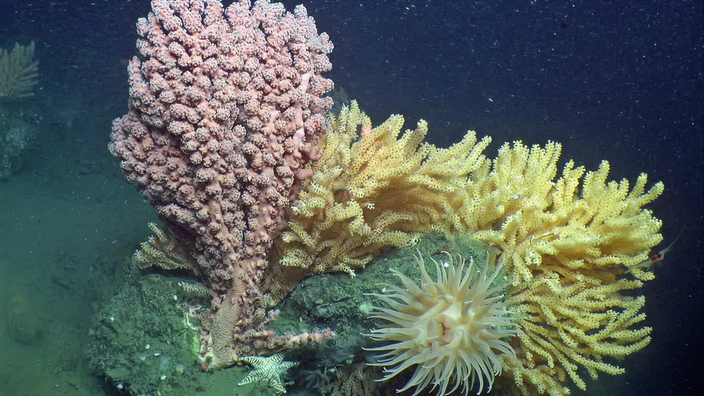
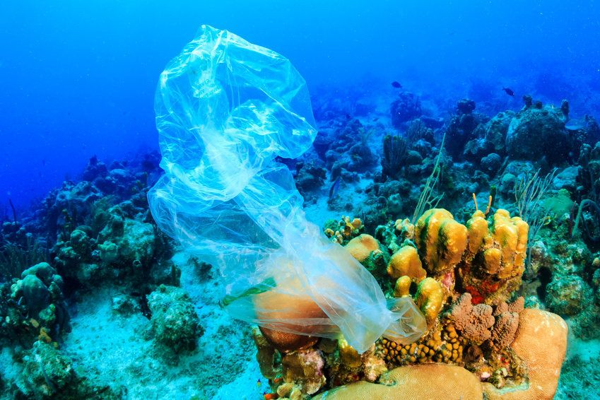
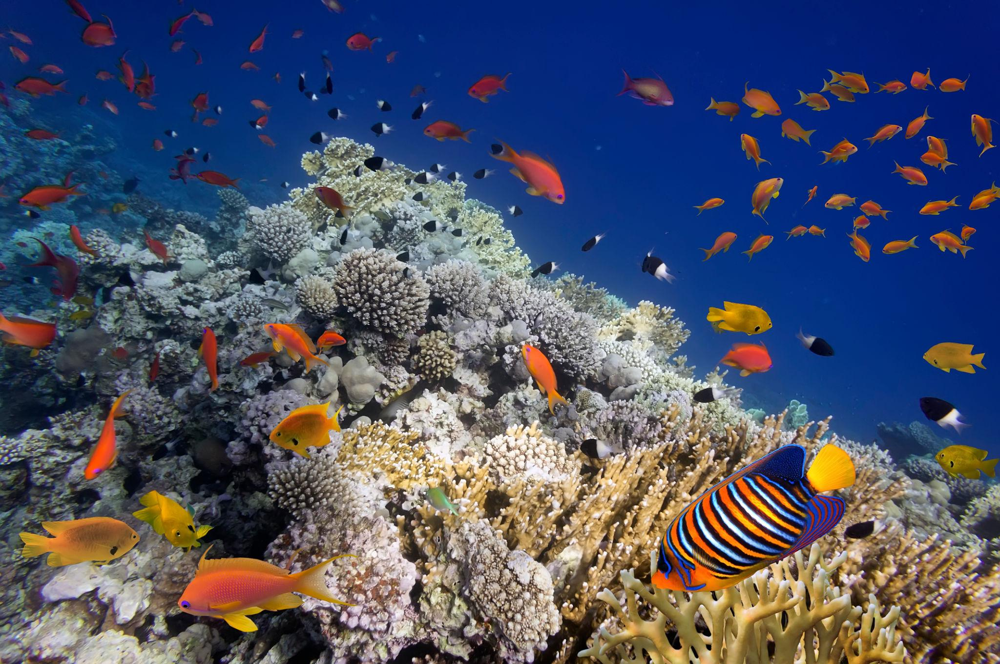

02 - GEOGRAFÍA OCEÁNICA
Los cinco océanos
Ubicación geográfica, superficie aproximada y profundidad máxima.
03 - BIODIVERSIDAD
Vida Marina
Catálogo de especies organizadas por grandes grupos biológicos.
Ballena azul (Balaenoptera musculus), delfines y focas
Hábitat: Océanos abiertos y regiones polares · Alimentación: Krill, peces pequeños y calamares · Adaptados a inmersiones profundas y comunicación acústica.
Tortuga verde (Chelonia mydas) y serpientes marinas
Hábitat: Aguas tropicales y subtropicales · Alimentación: Pastos marinos, algas y peces de arrecife · Grandes migradoras oceánicas.
Tiburón blanco (Carcharodon carcharias), rayas y peces de arrecife
Hábitat: Plataformas continentales y arrecifes · Alimentación: Depredadores tope y filtradores de plancton · Regulan el equilibrio trófico.
Pulpo Dumbo (Grimpoteuthis), medusas y octocorales
Hábitat: Desde arrecifes someros hasta 4.000 m de profundidad · Alimentación: Nieve marina y crustáceos · Muchos emiten luz por bioluminiscencia.

CORALES DE AGUAS PROFUNDAS / JARDINES BENTÓNICOS SIN LUZ SOLAR
04 - ECOSISTEMAS MARINOS
La vida que se abre paso en la oscuridad.
Desde la luz solar de las costas hasta la oscuridad absoluta de las fosas abisales, cada ambiente submarino sostiene redes tróficas irremplazables.
Arrecifes de coral y Aguas profundas
Ubicación: Zonas tropicales y lechos abisales (+200 m) · Albergan más del 25% de la biodiversidad marina y capturan partículas de nieve marina.
Bosques de algas y Praderas marinas
Ubicación: Costas templadas y fondos arenosos · Refugio de peces juveniles, tortugas y captura masiva de carbono azul.
Manglares
Ubicación: Zonas intermareales tropicales · Protegen las costas contra tormentas y funcionan como criaderos naturales.
05 - IMPACTO HUMANO
Amenazas Ambientales

- Contaminación por plásticos: Residuos sintéticos que ingresan a las cadenas tróficas mediante microplásticos.
- Sobrepesca: Extracción insostenible que agota poblaciones y altera el equilibrio ecológico.
- Derrames de petróleo: Contaminación tóxica directa sobre fauna costera y bentónica.
06 - ACCIÓN Y FUTURO
Conservación Marina

- Áreas marinas protegidas: Reservas libres de pesca extractiva para regenerar hábitats.
- Restauración de arrecifes: Cultivo y trasplante de colonias de coral resistentes.
- Acciones individuales: Reducir plásticos de un solo uso y apoyar organizaciones de conservación.